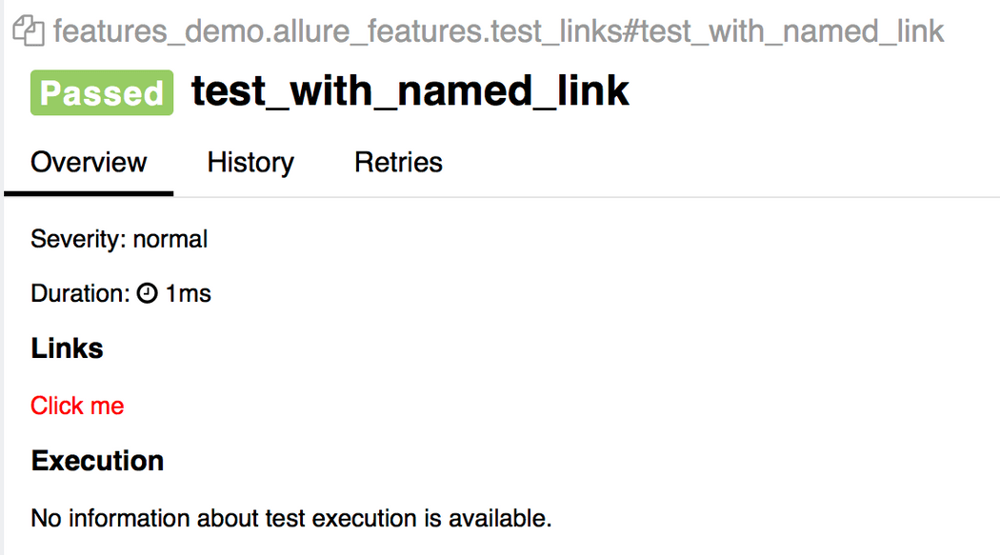

Allure测试报告完整学习笔记¶

目录¶
简介
安装Allure
Allure测试报告的结构
Java TestNG集成Allure Report
Python Pytest集成Allure Report
简介¶
假如你想让测试报告变得漂亮一点，那你一定会在搜索引擎中找到Allure测试报告的。Allure官方给出了个在线网站，访问以下链接就能一睹为快：
https://demo.qameta.io/allure/
可以在左下角切换为中文报告：
如此好看的测试报告，哪个老板不喜欢呢？
安装Allure¶
1.在GitHub releases：
https://github.com/allure-framework/allure2/releases
或者Maven Central：
https://repo.maven.apache.org/maven2/io/qameta/allure/allure-commandline/
下载安装包并解压。
2.找到bin目录，Windows使用allure.bat，Unix使用allure：
3.为了后续方便使用，可以把bin完整路径添加到系统环境变量PATH中，然后在命令行直接输入allure命令。
官方也给出了通过Linux的ppa、Mac的brew、Windows的scoop的安装方式，不过对于咱们老百姓来说，不如手动下载包来安装实在。
安装后就可以检查是否安装成功了：
$ allure --version
2.17.2
因为Allure是用Java写的，所以如果无法运行，那么要检查下有没有安装Java。
Java TestNG集成Allure Report¶
集成¶
在Maven的pom.xml中添加：
<properties>
<aspectj.version>1.8.10</aspectj.version>
</properties>
<dependencies>
<dependency>
<groupId>io.qameta.allure</groupId>
<artifactId>allure-testng</artifactId>
<version>LAST_VERSION</version>
<scope>test</scope>
</dependency>
</dependencies>
<build>
<plugins>
<plugin>
<groupId>org.apache.maven.plugins</groupId>
<artifactId>maven-surefire-plugin</artifactId>
<version>2.20</version>
<configuration>
<argLine>
-javaagent:"${settings.localRepository}/org/aspectj/aspectjweaver/${aspectj.version}/aspectjweaver-${aspectj.version}.jar"
</argLine>
</configuration>
<dependencies>
<dependency>
<groupId>org.aspectj</groupId>
<artifactId>aspectjweaver</artifactId>
<version>${aspectj.version}</version>
</dependency>
</dependencies>
</plugin>
</plugins>
</build>
然后执行命令：
$ mvn clean test
在target/allure-results目录就会生成allure测试报告，再执行命令：
$ allure serve target/allure-results
Allure会创建一个Jetty服务器，拉起默认浏览器打开测试报告。
@Description¶
添加测试描述：
package my.company.tests;
import org.junit.Test;
import io.qameta.allure.Description;
@Test
public class MyTests {
@Test
@Description("Some detailed test description")
public void testSomething() throws Exception {
...
}
}
@Step¶
添加测试步骤描述，除了文字，Allure2通过反射机制，能够在@Step中获取参数，比如：
public class User {
private String name;
private String password;
...
}
import io.qameta.allure.Step;
...
@Step("Type {user.name} / {user.password}.")
public void loginWith(User user) {
...
}
@Attachment¶
添加测试报告的附件，可以是String或byte[]类型，不是显式的话Allure会调用toString()尝试隐式转换：
import io.qameta.allure.Attachment;
...
@Attachment
public String performedActions(ActionSequence actionSequence) {
return actionSequence.toString();
}
@Attachment(value = "Page screenshot", type = "image/png")
public byte[] saveScreenshot(byte[] screenShot) {
return screenShot;
}
type用于指定MIME类型，不是必须的，Allure会根据内容自动适配。
除了注解，也可以在代码中添加：
import io.qameta.allure.Allure;
...
Allure.addAttachment("My attachment", "My attachment content");
Path content = Paths.get("path-to-my-attachment-contnet");
try (InputStream is = Files.newInputStream(content)) {
Allure.addAttachment("My attachment", is);
}
Links¶
添加超链接，有3个注解@Link、@Issue、@TmsLink（test management system）：
import io.qameta.allure.Link;
import io.qameta.allure.Issue;
import io.qameta.allure.TmsLink;
@Link("https://example.org")
@Link(name = "allure", type = "mylink")
public void testSomething() {
...
}
@Issue("123")
@Issue("432")
public void testSomething() {
...
}
@TmsLink("test-1")
@TmsLink("test-2")
public void testSomething() {
...
}
链接类型可以在properties中定义，Allure会用注解中的值替换{}：
allure.link.mylink.pattern=https://example.org/mylink/{}
allure.link.issue.pattern=https://example.org/issue/{}
allure.link.tms.pattern=https://example.org/tms/{}
@Severity¶
添加严重程度标识：
package org.example.tests;
import org.junit.Test;
import io.qameta.allure.Severity;
import io.qameta.allure.SeverityLevel;
public class MyTest {
@Test
@Severity(SeverityLevel.CRITICAL)
public void testSomething() throws Exception {
// ...
}
}
敏捷标识¶
在敏捷开发中有Epic、Feature和Stories三个概念，用于对需求进行分层管理，同理可以运用到测试分层管理：
package org.example.tests;
import org.junit.Test;
import io.qameta.allure.Epic;
import io.qameta.allure.Feature;
import io.qameta.allure.Story;
@Epic("Allure examples")
@Feature("Junit 4 support")
public class MyTest {
@Test
@Story("Base support for bdd annotations")
@Story("Advanced support for bdd annotations")
public void testSomething() throws Exception {
// ...
}
}
Python Pytest集成Allure Report¶
集成¶
执行以下命令安装：
$ pip install allure-pytest
它会同时安装allure-pytest和allure-python-commons两个包。
然后指定Allure测试报告目录：
$ pytest --alluredir=/tmp/my_allure_results
最后执行命令打开报告：
$ allure serve /tmp/my_allure_results
Allure会创建一个Jetty服务器，拉起默认浏览器打开测试报告。
pytest结果状态¶
Allure会根据pytest的结果状态进行标记：
import pytest
def test_success():
"""this test succeeds"""
assert True
def test_failure():
"""this test fails"""
assert False
def test_skip():
"""this test is skipped"""
pytest.skip('for a reason!')
def test_broken():
raise Exception('oops')
pytest特性¶
xfail¶
@pytest.mark.xfail(condition=lambda: True, reason='this test is expecting failure')
def test_xfail_expected_failure():
"""this test is an xfail that will be marked as expected failure"""
assert False
@pytest.mark.xfail(condition=lambda: True, reason='this test is expecting failure')
def test_xfail_unexpected_pass():
"""this test is an xfail that will be marked as unexpected success"""
assert True
会在Allure报告中展示：
skipif¶
@pytest.mark.skipif('2 + 2 != 5', reason='This test is skipped by a triggered condition in @pytest.mark.skipif')
def test_skip_by_triggered_condition():
pass
会在Allure报告中展示：
fixtures¶
@pytest.fixture(params=[True, False], ids=['param_true', 'param_false'])
def function_scope_fixture_with_finalizer(request):
if request.param:
print('True')
else:
print('False')
def function_scope_finalizer():
function_scope_step()
request.addfinalizer(function_scope_finalizer)
@pytest.fixture(scope='class')
def class_scope_fixture_with_finalizer(request):
def class_finalizer_fixture():
class_scope_step()
request.addfinalizer(class_finalizer_fixture)
@pytest.fixture(scope='module')
def module_scope_fixture_with_finalizer(request):
def module_finalizer_fixture():
module_scope_step()
request.addfinalizer(module_finalizer_fixture)
@pytest.fixture(scope='session')
def session_scope_fixture_with_finalizer(request):
def session_finalizer_fixture():
session_scope_step()
request.addfinalizer(session_finalizer_fixture)
class TestClass(object):
def test_with_scoped_finalizers(self,
function_scope_fixture_with_finalizer,
class_scope_fixture_with_finalizer,
module_scope_fixture_with_finalizer,
session_scope_fixture_with_finalizer):
step_inside_test_body()
会在Allure报告中展示（fixtures会展示在Set up和Tear down中）：
而对于fixture中的结果状态，Allure也会进行标记：
import pytest
@pytest.fixture
def skip_fixture():
pytest.skip()
@pytest.fixture
def fail_fixture():
assert False
@pytest.fixture
def broken_fixture():
raise Exception("Sorry, it's broken.")
def test_with_pytest_skip_in_the_fixture(skip_fixture):
pass
def test_with_failure_in_the_fixture(fail_fixture):
pass
def test_with_broken_fixture(broken_fixture):
pass
parametrize¶
import allure
import pytest
@allure.step
def simple_step(step_param1, step_param2 = None):
pass
@pytest.mark.parametrize('param1', [True, False], ids=['id explaining value 1', 'id explaining value 2'])
def test_parameterize_with_id(param1):
simple_step(param1)
@pytest.mark.parametrize('param1', [True, False])
@pytest.mark.parametrize('param2', ['value 1', 'value 2'])
def test_parametrize_with_two_parameters(param1, param2):
simple_step(param1, param2)
@pytest.mark.parametrize('param1', [True], ids=['boolean parameter id'])
@pytest.mark.parametrize('param2', ['value 1', 'value 2'])
@pytest.mark.parametrize('param3', [1])
def test_parameterize_with_uneven_value_sets(param1, param2, param3):
simple_step(param1, param3)
simple_step(param2)
Allure会展示每个test和id：
以及运行细节：
Allure特性¶
@allure.step¶
import allure
import pytest
from .steps import imported_step
@allure.step
def passing_step():
pass
@allure.step
def step_with_nested_steps():
nested_step()
@allure.step
def nested_step():
nested_step_with_arguments(1, 'abc')
@allure.step
def nested_step_with_arguments(arg1, arg2):
pass
def test_with_imported_step():
passing_step()
imported_step()
def test_with_nested_steps():
passing_step()
step_with_nested_steps()
step能从入参中读取值：
import allure
@allure.step('Step with placeholders in the title, positional: "{0}", keyword: "{key}"')
def step_with_title_placeholders(arg1, key=None):
pass
def test_steps_with_placeholders():
step_with_title_placeholders(1, key='something')
step_with_title_placeholders(2)
step_with_title_placeholders(3, 'anything')
step也能在conftest.py中用到fixtures上：
import allure
import pytest
@allure.step('step in conftest.py')
def conftest_step():
pass
@pytest.fixture
def fixture_with_conftest_step():
conftest_step()
import allure
from .steps import imported_step
@allure.step
def passing_step():
pass
def test_with_step_in_fixture_from_conftest(fixture_with_conftest_step):
passing_step()
allure.attach¶
给Allure测试报告添加附件，allure.attach(body, name, attachment_type, extension)：
body 文件内容（或者source指定文件路径）
name 文件名称
attachment_type 附件类型（
allure.attachment_type中的某个值）extension 文件扩展
import allure
import pytest
@pytest.fixture
def attach_file_in_module_scope_fixture_with_finalizer(request):
allure.attach('A text attacment in module scope fixture', 'blah blah blah', allure.attachment_type.TEXT)
def finalizer_module_scope_fixture():
allure.attach('A text attacment in module scope finalizer', 'blah blah blah blah',
allure.attachment_type.TEXT)
request.addfinalizer(finalizer_module_scope_fixture)
def test_with_attacments_in_fixture_and_finalizer(attach_file_in_module_scope_finalizer):
pass
def test_multiple_attachments():
allure.attach.file('./data/totally_open_source_kitten.png', attachment_type=allure.attachment_type.PNG)
allure.attach('<head></head><body> a page </body>', 'Attach with HTML type', allure.attachment_type.HTML)
Descriptions¶
既可以使用装饰器@allure.description或@allure.description_html添加描述：
import allure
@allure.description_html("""
<h1>Test with some complicated html description</h1>
<table style="width:100%">
<tr>
<th>Firstname</th>
<th>Lastname</th>
<th>Age</th>
</tr>
<tr align="center">
<td>William</td>
<td>Smith</td>
<td>50</td>
</tr>
<tr align="center">
<td>Vasya</td>
<td>Jackson</td>
<td>94</td>
</tr>
</table>
""")
def test_html_description():
assert True
@allure.description("""
Multiline test description.
That comes from the allure.description decorator.
Nothing special about it.
""")
def test_description_from_decorator():
assert 42 == int(6 * 7)
def test_unicode_in_docstring_description():
"""Unicode in description.
Этот тест проверяет юникод.
你好伙计.
"""
assert 42 == int(6 * 7)
也可以在代码中使用allure.dynamic.description动态添加描述：
import allure
@allure.description("""
This description will be replaced at the end of the test.
""")
def test_dynamic_description():
assert 42 == int(6 * 7)
allure.dynamic.description('A final description.')
Titles¶
既可以使用装饰器@allure.title添加标题：
import allure
import pytest
@allure.title("This test has a custom title")
def test_with_a_title():
assert 2 + 2 == 4
@allure.title("This test has a custom title with unicode: Привет!")
def test_with_unicode_title():
assert 3 + 3 == 6
并且可以获取参数值：
@allure.title("Parameterized test title: adding {param1} with {param2}")
@pytest.mark.parametrize('param1,param2,expected', [
(2, 2, 4),
(1, 2, 5)
])
def test_with_parameterized_title(param1, param2, expected):
assert param1 + param2 == expected
也可以在代码中使用allure.dynamic.title动态添加：
@allure.title("This title will be replaced in a test body")
def test_with_dynamic_title():
assert 2 + 2 == 4
allure.dynamic.title('After a successful test finish, the title was replaced with this line.')
Links¶
@allure.link、 @allure.issue 和@allure.testcase：
import allure
TEST_CASE_LINK = 'https://github.com/qameta/allure-integrations/issues/8#issuecomment-268313637'
@allure.link('https://www.youtube.com/watch?v=4YYzUTYZRMU')
def test_with_link():
pass
@allure.link('https://www.youtube.com/watch?v=Su5p2TqZxKU', name='Click me')
def test_with_named_link():
pass
@allure.issue('140', 'Pytest-flaky test retries shows like test steps')
def test_with_issue_link():
pass
@allure.testcase(TEST_CASE_LINK, 'Test case title')
def test_with_testcase_link():
pass

@allure.link会提供可点击的超链接。
@allure.issue会有个可供点击的图标。issure链接模板通过
--allure-link-pattern定义：$ pytest directory_with_tests/ --alluredir=/tmp/my_allure_report \ --allure-link-pattern=issue:http://www.mytesttracker.com/issue/{}
Retries¶
Allure有个Retries标签页用来展示重试的测试：
import allure
import random
import time
@allure.step
def passing_step():
pass
@allure.step
def flaky_broken_step():
if random.randint(1, 5) != 1:
raise Exception('Broken!')
def test_broken_with_randomized_time():
passing_step()
time.sleep(random.randint(1, 3))
flaky_broken_step()
敏捷标识¶
在敏捷开发中有Epic、Feature和Stories三个概念，用于对需求进行分层管理，同理可以运用到测试分层管理：
import allure
def test_without_any_annotations_that_wont_be_executed():
pass
@allure.story('epic_1')
def test_with_epic_1():
pass
@allure.story('story_1')
def test_with_story_1():
pass
@allure.story('story_2')
def test_with_story_2():
pass
@allure.feature('feature_2')
@allure.story('story_2')
def test_with_story_2_and_feature_2():
pass
也可以使用--allure-epics、--allure-features、--allure-stories指定运行测试：
$ pytest tests.py --allure-stories story_1,story_2
collected 5 items
tests.py ... [100%]
============================== 3 passed in 0.01 seconds ==============================
$ pytest tests.py --allure-features feature2 --allure-stories story2
collected 5 items
tests.py ... [100%]
=============================== 2 passed in 0.01 seconds ==============================
严重程度¶
使用@allure.severity或allure.severity_level：
import allure
def test_with_no_severity_label():
pass
@allure.severity(allure.severity_level.TRIVIAL)
def test_with_trivial_severity():
pass
@allure.severity(allure.severity_level.NORMAL)
def test_with_normal_severity():
pass
@allure.severity(allure.severity_level.NORMAL)
class TestClassWithNormalSeverity(object):
def test_inside_the_normal_severity_test_class(self):
pass
@allure.severity(allure.severity_level.CRITICAL)
def test_inside_the_normal_severity_test_class_with_overriding_critical_severity(self):
pass
--allure-severities用来指定运行哪些严重程度的测试：
$ pytest tests.py --allure-severities normal,critical
collected 5 items
bdd_annotations_demo/test_severity_labels.py ... [100%]
================================ 3 passed in 0.01 seconds ============================